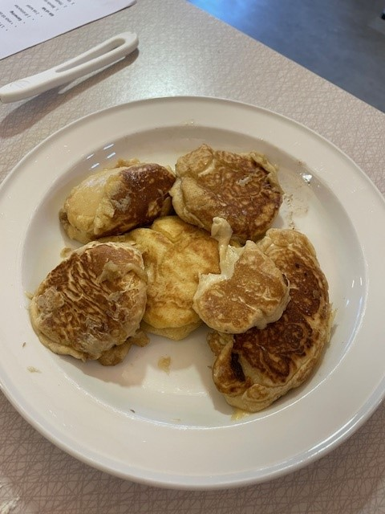
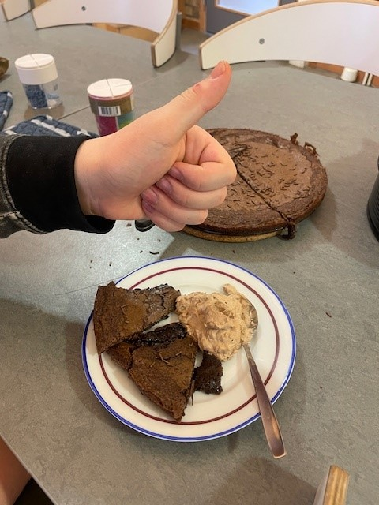
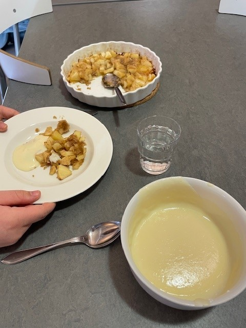

Dessa var jättegoda! Om man gillar en blöt insida rekommenderar vi att man steker med smör i bara en till två minuter, när stekpannan har nått max-tempen!
**** 4.5/5

Detta är helt super! Den var krispig, och chokladig och söt! Lägg gärna till din egen twist när du gör detta recept!
***** 5/5 :D

Wow! Det smakar som att man köpte det från affären! Man kan också lägga till en smak-sättare, som nutella, mango eller vad du vill!
**** 4.8/5

Mmm! Äpple-delarna blir mjuka, bröd-smulorna blir krispiga. Det är ett riktigt bra recept.
**** 4.5/5